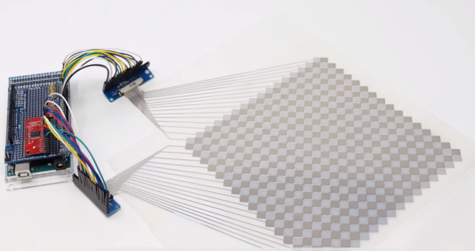
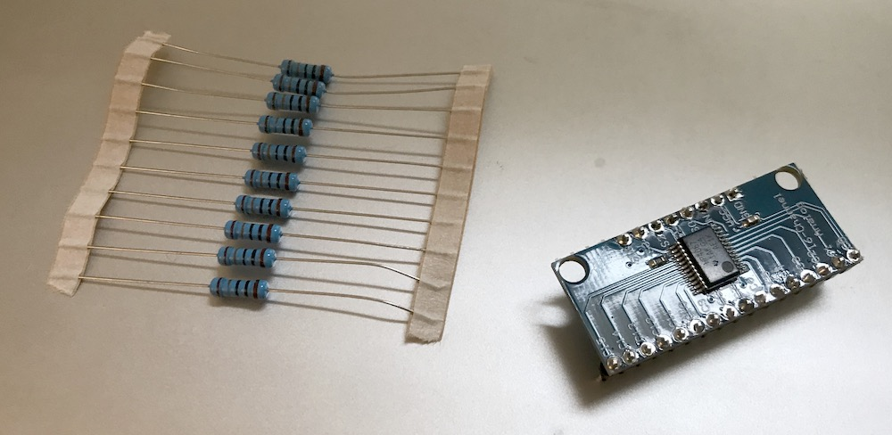
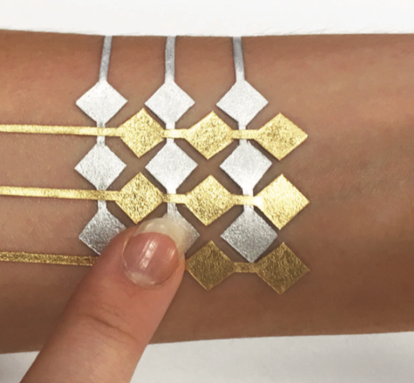
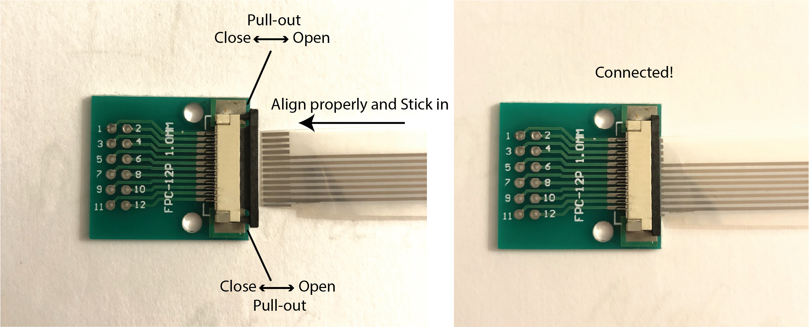
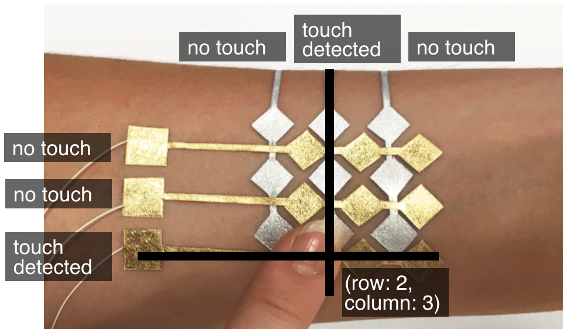
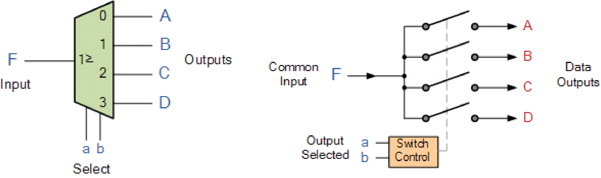

6.810 Engineering Interactive Technologies (fall 2020)
Problem Set Series: Multi-Touch Pad

Problem Set 1
In the first part of the problem set, you are going to do the following steps:
- (1) Create Processing User Interface for Generating Fabrication Files
- (2) Inkjet Print Top and Bottom Electrode Layers
- (3) Assemble Top and Bottom Electrode Layers
- (4) Connect Top and Bottom Electrode Layers to FCP chips
- (5) Build Multi-Touch Sensing Circuit
Check before you start: Do you have all the hardware?
Before you get started, check if you have all of the following in your bag:
- ESP32 microcontroller, breadboard, and wires
- one multiplexer
- two FPC connectors
- 10 x 100Kohm resistors (one for each receiver pin)
In addition, the following items will be provided when you come in for printing and assembling the multitouch pad:
- two transparent sheets for conductive inkjet printing of the top and bottom electrodes
- tattoo transfer paper that acts as a thin layer of glue to attach the top and bottom electrode sheets to each other
- one transparent sheets to cover up the top electrodes


(1) Processing User Interface for
Generating Fabrication Files
In the first part of this problem set, you will write a user interface in Processing that will automatically generate the fabrication files for making multi-touch pads of different dimensions. In particular, a user will be able to input parameters, such as the width and height of the multi-touch pad and then automatically receive the matching fabrication files, i.e. a 2D drawing of the required circuit in .pdf file format that the user can send to their 2D printer for conductive inkjet printing.
As explained in lecture, your multi-touch pad has two layers that are printed separately.
One layer contains the rows of electrodes, the other layer contains the columns.
Each row/column consists of multiple electrodes and has a single wire at the end.
Once both sheets are printed, you layer them on top of each other to build the final circuit.
We will be using the classical two-layered diamond pattern that is commonly used for mutual-capacitive touch sensing.


Required User Interface Functionality
In the user interface, the user should be able to select:
- the desired number of electrodes in x-direction (default value: 10 electrodes)
- the desired number of electrodes in y-direction (default value: 10 electrodes)
- the edge length of the diamond electrodes in mm (default value: 6mm)
Other parameters that you need to set in your code but don't have to display in the UI, are:
please add a labeled drawing to prevent confusion of students what these measurements refer to. Include edge length in the drawing as well.
- the spacing between adjacent electrodes (vertex-to-vertex what does this mean? from the center to the corner? we should label one of the drawings) in mm let's not have them choose their own value (we recommend 1mm, but feel free to choose your own value)
- the spacing between non-connected electrodes, i.e. rows and columns, in mm (default value: 0.5mm)
- the thickness of the wires in mm (default value: 0.2mm)
- the spacing of wires on the FPC connector in mm (to find the correct value, look at your FPC connector breakout board or the data sheet of the FPC connector here)
The user interface should only allow the user to select only reasonable numbers using the input elements:
- for each input field listed above, think about what is a reasonable lower and upper bound (i.e. min/max values)
- write a short explanation why you picked the lower/upper bounds for each field and submit it using this google form
- implement the lower/upper bounds in your user interface, i.e. the user should either not be able to select values outside the lower/upper bounds (i.e. you only offer a selection of valid numbers) or if your UI allows to enter any value then your user interface should show the user a warning that the value is invalid and reset to the last valid value
Finally, the user interface should have a preview and export function:
- one button to switch between the design's top and bottom layer view, i.e. clicking the button should either show the top layer or the bottom layer so the layers can be looked at individually
- one save button, which when clicked saves the generated electrodes into two .pdf files (called bottom-electrodes.pdf and top-electrodes.pdf), one for the rows of electrodes (bottom sheet) and one for the columns (top sheet)
- make sure the exported files have all settings correctly set for conductive inkjet printing (think about the content from lab1)

Setting the Processing window to the right resolution for printing
Since the multi-touch pad design is printed in millimeter but the Processing handles everything in pixel, you first need to figure out a conversion factor between pixel and millimeter to determine the Processing window size.
so when did you ever see 72dpi?
Note that Processing uses a fix dots per inch measurement.
On Windows, you are most likely to encounter a 96 dpi resolution.
On Mac, you are also most likely to encounter a 96dpi resolution (althrough Wikipedia seems to disagree on this matter and thinks it is 72 dpi).
(Note that the resolution of the Processing sketch window is different from the screen resolution pixel per inch, which usually are around a couple hundred nowadays, this is set by the operating system and mainly used for writing programs like Microsoft Word).
If you are unsure about the right resolution, you can do the following test:
Create a window in Processing of any size and draw a square into the window using a fixed pixel size (e.g. rect(96,96) = 96 x 96 pixels).
Export the square using your implemented .pdf export function and print it out with a normal Inkjet printer (while printing make sure you don't scale the image and print it with the "Print Entire Image" setting).
Next, measure the output with a ruler and determine the millimeter (e.g., let's say it was 1 inch).
Finally, you can calcuate Processing's dpi by calculating the pixel to millimeter conversion factor based on this, which in our case is 96dots/1 inch = 96dpi.
So if you draw a rectangle of 192 pixel (96dots * 2) it will be 2 inches long when printed.

Drawing the Top and Bottom Electrodes and Wires
You may find it helpful to look at the following Processing classes to draw the top and bottom electrodes and wires:
Creating User Interface Input Elements
For the UI elements, we do not use an external library and instead use a simple trick:
We draw them as shapes (e.g. rectangles), add a text where needed to display numbers, and then use mouse-click and drag events to update the UI elements.
Testing your Program
When you are done, make sure you test your user interface by exporting several different multi-touch pad sizes, e.g. 4x10, 12x6, 5x5.
If you are unsure if everything has the right dimension, use a regular color printer to print out your design and measure it with a ruler.
(2) Inkjet Print Top and Bottom Electrode Layers
Once your circuit design tool is ready, export a multi-touch pad of 9x8 electrodes from your user interface.
Go to an office hour to inkjet print the top and bottom layer of your multi-touch pad.
(Note that the FPC connectors and the multiplexer in section 4 and 5 need soldering, so if you come in for printing you may also solder the headerpins for those components on in one sitting rather than coming in multiple times.)
Remember you need to print two sheets, one for column and one for rows.
While printing, make sure you don't scale the image and print with "Print Entire Image" setting, so that the image prints out accurately.
(3) Assemble Top and Bottom Electrode Layers
Once you printed both sheets, we want to assemble them on top of each other.
Note, that both electrode sheets should have the conductive side facing upwards towards the user.
insert image of aligning both sheets here with conductive side up
Once you made sure both face upwards with the conductive side, we will glue them together using a temporary tattoo paper. We will use this one here.
We are glueing only the electrode touch area but not where the wires are routing to the FPC connectors. so we glue first and then cut it out later?
The alignment between the top and bottom electrode layers is really critical for accurate sensing signals, thus before we glue them together we want to make sure everything is aligned properly!
To help with this, use scotch tape to tape one side so that the relative positions are fixed.
Flip the top layer up, so that the bottom layer is exposed.
add tape to hardware list for teaching team
insert image of taping here
Next, we prepare the tattoo transfer paper.
For this, pull of (Junyi what do we have to do?) the backing and make the tattoo transfer paper moist with a sponge.
insert image of tattoo transfer paper here
Once you have the tattoo transfer paper ready, attach it to the bottom layer, then flip back the top layer so that they end up exactly aligned and glued.
insert image of adding tattoo paper here and second image flipping back
Finally, since the top electrode is still exposed, we will add a transparent film on top, so that you finger does not end up touching the electrodes directly. You can do that with the scotch tape etc. do you mean the transparent sheet is the scotch tape or you tape the sheet with the scotch tape?
Your final result should look like this:

(4) Solder and Connect the FPC Connectors
Once you have the multi-touch pad printed and assembled, you need to connect it to a breadboard so that it can be connected to the rest of the circuit.
In the labs, we used crocodile clamps but the use of crocodile clamps for such fine spacings as we have here is really impractical (and perhaps even impossible).
For this reason, we will use a Flexible Printed Circuit (FPC) Connector.
FCP Connectors are used for connecting (surprise) flexible printed circuits to the rest of the rigid circuit.
In our case, connect the silver printed circuits to the main circuit.
The FCP connector has high resolution connectors on one side, which we will use to connect to the inkjet printed circuit, and on the other side has more widely spaced connectors, which we can use to connect to our breadboard.
We bought you two FPC connectors from here.
When you buy them, they look like the image below.

Note that they don't yet have header pins on them, so you need to add them yourself.
You have some header pins in your fabrication bag.

Go to an office hour to solder on the header pins (note that the multiplexer in the next step also needs soldering, so you may want to do both solder todos in one sitting rather than coming in twice).

Next, connect the FPC connector to your inkjet printed circuit.
Before you can do this, you need to first cut out the multitouch pad.
In particular, when you cut out the connector area pay extra attention that it is exactly the size that will fit inside the FPC connector (see images below).
Also check that the little pins inside the FPC connector head align with the traces on the piece you are cutting out.


When you connect your FPC connector, note that it matters in which direction you insert the multi-touch pad into the FPC connector.
You have to insert it so that the conductive side with the silver traces is facing towards the breakout board.
(does this mean we have two different types ordered?)
We ordered two different ypes of FPC connectors (sorry one went out of stock), therefore depending on which FPC connector you have, you need to connect the inkjet printed circuit in the following way(s).
(1) Pull-out:

(2) Flip-up:

Once you are done connecting one side of the multi-touch pad, repeat the procedure with the other side and connect it to the second FPC connector.
(4) Circuit Design and Multiplexer
General Sensing Principle
Let's zoom out for a moment and look at the sensing principle of the multi-touch pad that we had discussed in lecture.
As mentioned in lecture, the multitouch pad consists of sender electrodes (e.g., rows) and receiver electrodes (e.g., columns).
Sender Electrodes: When powered, the multitouch pad is sending a signal to the sender electrodes one by one, i.e. first sends a signal to the first sender electrode, then the second, then the third and so on. After it reached the last sender electrode, it continues again from the top.
Receiver Electrodes: Meanwhile, the receiver electrodes listen the entire time all simultaneously. They know which signal to expect since they know what signal the sender electrodes are sending. However, if a human finger comes in contact with the sender (receiver?) electrode, the signal changes. The receiver electrode notices this change. By knowing that this change only occured on one sender electrode and only one receiver electrode was able to pick up the signal, we know where the touch happened.
insert images here explaining the sensing principle

Circuit Design
Below, you can see the schematic of the circuit we are going to build.

Circuit for Receiving
The bottom of the schematic should look pretty familiar to you from the touch-button and slider we already built this week: i.e. a receiver pin is connected to one resistor which in turn are connected to one electrode columns so we can listen to the signals coming in.
Each new column has it's one receiver pin and resistor. As you can imagine, the more columns we have, the more receiver pins we need, so this can quickly blow up.
Circuit for Sending
For sending, we cannot use a single pin like we did in the touch button lab.
Remember, that we need to send a signal to each row of electodes individually one after another, so sharing a sender pin would not allow for this since it would send a signal to all electrodes simultaenously at the same time.
To send a signal one by one to each row, we would thus need the same number of sender pins as we have rows.
This can quickly become a lot would it be even possible with our ESP? if yes, how many?
To solve this problem, we use a new component called a multiplexer and why can we not use this for receiving as well?. A multiplexer can take a single input signal and then control to which output pin the signal should be send, so we can output the same signal to all sender pins while controlling which pin should get the signal. Pretty nice. We will provide more info on the multiplexer below.
Multiplexer
For our multi-touch pad, we bought the following multiplexer from here.
Multiplexer Soldering Header Pins on
The multiplexer we bought again has no headers yet, so you need to add them yourself.
You have some header pins in your fabrication bag.
Go to an office hour to solder on the header pins.

After you are done soldering, it should look like this:

Multiplexer Working Principle
As mentioned before, a multiplexer allows to select between multiple inputs and creates an output using a single line.
In our case, if you look at your multiplexer, we have 16 channels (pins on the left side from C0-C15) that can be combined into one output line.
Multiplexers can also be used the other way around, i.e. take one input and create multiple outputs, and thus used as a "de-multiplexer".
For our purposes, since we want to use a single sender pin on the ESP to create multiple sender signals, we will use our multiplexer as a demultiplexer.
Below we show the working principle of a 1-to-4 channel de-multiplexer for your reference.

Pins on the Multiplexer
We can output the same signal to all sender pins periodically while only using one signal pin (PWM pin) + four GPIO pins on ESP32 micro-controller I have no idea what you are talking about.
then explain what the pins are and what they are good for. I have no idea what 'the common pin' is.
In our case, this multiplexer chip is like a rotary switch - it internally routes the common pin (COM in the schematic, SIG on the board) to one of 16 channel pins (Cxx).
It works with both digital and analog signals (the voltage can't be higher than VCC, which is 5V), and the connections function in either direction.
To control it, connect 4 digital outputs to the chip's address select pins (S0-S3), and send it the binary address of the channel you want, e.g if 'S3,S2,S1,S0' is '0,1,0,0', the channel C4 pin is connected to SIG pin (for more details, see the datasheet and schematic file ).
This allows you to connect up to 16 pins to your system using only 5 pins on micro-controller!

(5) Assembling the Final Circuit
You can connect the FPC connector breakout boards to the multiplexer via male-to-female jumper wires and breadboard.
As for the receiver pins, you should connect each of them to one ADC (analog-to-digital converter) pin on ESP32 micro-controller.
You will also need to ground each of the receiver pins with one 100k ohm resistor.
The overall sensing circuit schematic is shown down below:
why is there a PWM signal?
Upload your Code and Design Files, Show Hardware to TA
For grading, please upload the following to your google drive student folder:
- the .pde file of your Processing program
- the two .pdf files you used for conductive inkjet printing
- 3-5 photos showing your assembled circuit from different perspectives (include top view + side views)
- bring your assembled multi-touch pad to your spray session
add schematic here.
Grading
We will give 25 pts in total:
- does the Processing UI have input elements that correctly set the number of electrodes, size of electrodes, spacing of electrodes, wire thickness and spacing on the FPC connector or are these values hardcoded in the code? (5 pts)
- does the Processing UI have lower and upper bounds for each input field? are the selected lower and upper bounds well reasoned based on what makes sense given the hardware parts you have available for the pset, the sensing principle we use, and given that a human is touching the multi-touch pad? (5 pts)
- does the Processing UI export function export a drawing in the correct dimensions into two seperate .pdf files that are named correctly and that have the correct settings for conductive inkjet printing? are the toggle functions for showing/hiding layers implemented? (5 pts)
- did you finish assembling your multi-touch pad, i.e. did you inkjet print both the top and bottom electrode layer, glued them together, and connected the FPC chips? (5 pts)
- did you correctly build the multi-touch sensing circuit using the multiplexer, resistors and ESP? (5 pts)
Generating Fabrication Files